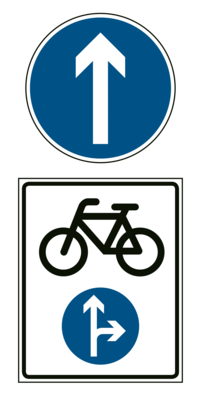

- 117. Szabad-e motorkerékpárral jobbra bekanyarodni ennél a jelzésnél? #703421
- Nem.
- Igen.

- 118. Kétkerekű motorkerékpárral közlekedve eleget kell-e tenni a jelzőtáblával jelzett utasításnak? #703422
- Igen.
- Nem, ez a jelzés csak a gépkocsikra vonatkozik.
- Nem, ez a jelzés nem vonatkozik a motorkerékpárra.
- 119. Hogyan kell közlekedni a jelzőtáblát követően? #703424
- Úgy, hogy az út által körbezárt terület a járművezetőtől balra essék.
- Úgy, hogy az út által körbezárt terület a járművezetőtől jobbra essék.
- Ellentétes rendőri jelzésig körbe-körbe kell haladni.

- 120. Mire utasít ez a jelzőtábla? #703425
- Arra, hogy a jelzőtáblával jelzett akadályt jobbról kell kikerülni.
- Jobbra történő bekanyarodásra.
- Arra, hogy a jelzőtáblával jelzett akadályt valamely irányból ki kell kerülni.

- 121. Vonatkozik-e ez a jelzés a kétkerekű motorkerékpárra? #703426
- Nem.
- Igen.
- Igen, a hátsó kerékre kötelező hóláncot szerelni.

- 122. Motorkerékpárral közlekedve milyen sebességgel kell a táblát követően haladni? #703427
- Legalább 30 km/h sebességgel.
- Legfeljebb 30 km/h sebességgel.
- Legalább 30 m/s sebességgel.

- 123. Gépjárművel közlekedve szabad-e behajtani a jelzőtáblával jelzett területre? #703428
- Igen, a kiegészítő táblán jelzett időszakon kívül, célforgalomban.
- Igen, a kiegészítő táblán jelzett időszakban, célforgalomban.
- Nem.
- 124. Milyen sebességgel közlekedhetnek a járművek a jelzőtáblával jelzett területen? #703429
- Legfeljebb 20 km/h sebességgel, de csak a kiegészítő táblán jelzett időszakon kívül, célforgalomban.
- Legfeljebb 10 km/h sebességgel, de csak a kiegészítő táblán jelzett időszakon kívül, célforgalomban.
- Legfeljebb 5 km/h sebességgel, de csak a kiegészítő táblán jelzett időszakon kívül, célforgalomban.

- 125. Gépjárművel közlekedve szabad-e behajtani a jelzőtáblával jelzett területre? #703430
- Igen, a kiegészítő táblán jelzett időszakon kívül, az ott lakók járműveivel, továbbá engedéllyel.
- Nem.
- Igen, a kiegészítő táblán jelzett időszakban.

- 126. Gépjárművel közlekedve szabad-e behajtani a jelzőtáblával jelzett területre? #703431
- Nem.
- Igen.
- 127. Mikor nem kötelező legalább a táblával megjelölt sebességgel közlekedni? #703465
- Akkor, ha az a személy- és vagyonbiztonságot veszélyeztetné.
- Akkor, ha a vezető alacsonyabb sebességgel kíván közlekedni.
- Mindig kötelező legalább a táblán megjelölt sebességgel közlekedni.
- 128. Mi a jelzőtábla neve? #703467
- ’Kikerülési irány’
- ’Kötelező haladási irány’
- ’Szoros jobbra tartási kötelezettség’
- 129. Mi a jelzőtábla neve? #703468
- ’Körforgalom’
- ’Kötelező haladási irány’
- ’Forgószél’

- 130. Mi a jelzőtábla jelentése? #703606
- ’Kötelező haladási irány’
- ’Egyirányú forgalmú út’
- ’Terelőút’

- 131. Mi a jelzőtábla jelentése? #703607
- ’Kötelező haladási irány’
- ’Kikerülési irány’
- ’Egyirányú forgalmú út’
- 132. Mi a jelzőtábla jelentése? #703609
- ’Kikerülési irány’
- ’Kötelező haladási irány’
- ’Terelőút’

- 133. Szabad-e segédmotoros kerékpárral a jelzőtáblával jelzett területre behajtani? #703610
- Igen, de csak a megjelölt időszakon kívül.
- Igen, a megjelölt időszakban.
- Nem.
- 134. Segédmotoros kerékpárral milyen sebességgel szabad közlekedni a jelzőtáblával jelzett területen? #703611
- Csak a megjelölt időszakon kívül szabad közlekedni, és akkor is csak legfeljebb 20 km/h sebességgel.
- Legfeljebb 40 km/h sebességgel.
- A jelzőtáblával jelzett területre nem szabad segédmotoros kerékpárral behajtani.

- 135. Segédmotoros kerékpárral közlekedve figyelembe kell-e venni a jelzőtábla jelentését? #714908
- Nem.
- Igen.
- Csak akkor, ha nem szállít utast.